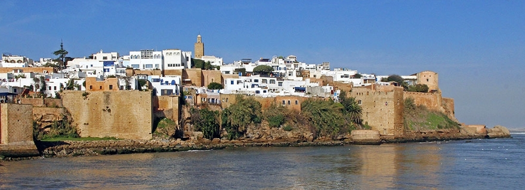
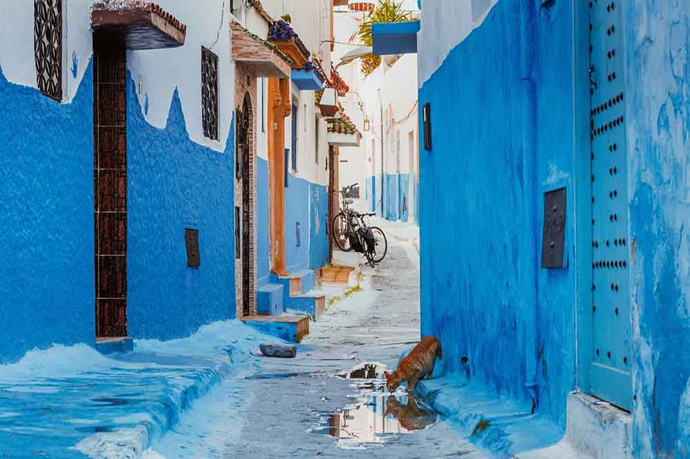
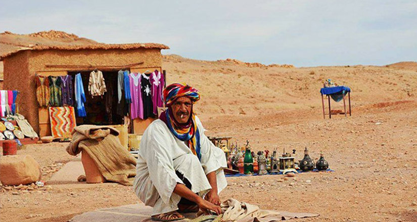
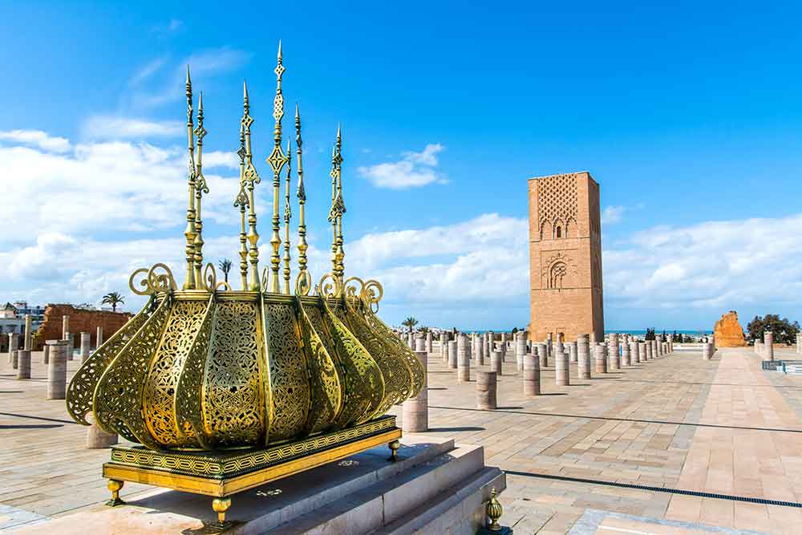
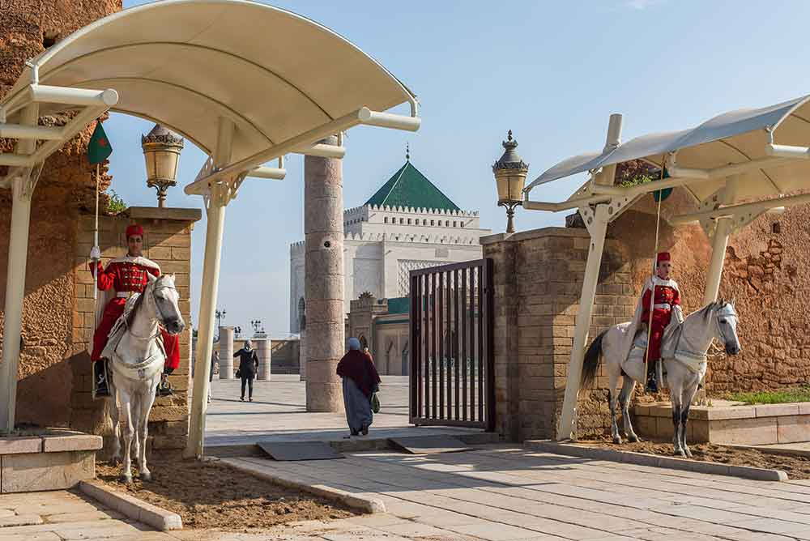
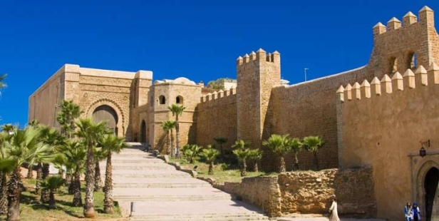

¡SaharaToursGo!
¡SaharaToursGo!
El RABAT
Rabat es la capital del Reino de Marruecos y de la región Rabat-Salé-Kenitra. La ciudad está situada en la costa atlántica, en la orilla sur y en la desembocadura del río Bu Regreg, que la separa de la vecina ciudad de Salé. Según el censo de 2004 tenía una población de 1.622.860 habitantes, lo que la convierte en la segunda ciudad más populosa del país tras Casablanca
La historia de Rabat comenzó con un asentamiento conocido como Chellah en la ribera del Bu Regreg,4 en el siglo III a. C. En el 40 d. C., los romanos se hicieron cargo de Chellah y la convirtieron en el asentamiento romano de Sala Colonia. Roma conservó la colonia hasta el 250 d. C., cuando la abandonó a los gobernantes bereberes, quienes desempeñaron un papel importante en la España musulmana
El núcleo original de la ciudad fue el campamento fortificado o ribat construido por el sultán almohade Abd Al-Mumin en 1146, aprovechando una alta pared rocosa que domina la desembocadura del río. El lugar fue base para incursiones almohades en la Península Ibérica y fue bautizado como Ribat al-Fath, traducido como «Campamento de la Victoria» o «Fortaleza de la Victoria»
BARRIOS DEL RABAT
En primer lugar, Uday y Medina se sitúan como eje central para el encuentro del Bu Regreg y del océano Atlántico. Al oeste se suceden una serie de barrios populares y de clase media a lo largo de la costa, como Akkari, Yacoub El Mansour, Massa y el Fath. Un segundo grupo de barrios modestos se dispone a lo largo de las ramblas, bordeando el Bu Regreg, e incluye Youssoufia, Takadoum y Hay Nahda. Entre estos dos radios de los barrios de clase media, sin embargo, se encuentra una amplia diagonal de prósperos barrios como Les Orangers, Aviation, Mabel, Hassan o Agdal Hay Riad, y ello se refleja en las viviendas de lujo que hay en los barrios Souissi y Embajadores. Este es el lugar de elección para las residencias diplomáticas. Este vasto plano urbano, aireado, con abundante vegetación y nieblas procedentes del Océano, contrasta notablemente con los islotes más estrechos y densos que lo encuadran.
Además, dos grandes proyectos están cambiando la cara de la ciudad: el proyecto Amwaj, cuyo objetivo es la organización de la desembocadura del río Bo Regreg sobre sus dos orillas, con hoteles, residencias de lujo de estilo árabe-andaluz; y el proyecto Sephira, que pretende organizar la cornisa del litoral atlántico mediante la construcción de hoteles, un teatro, un complejo deportivo y residencias de lujo de estilo contemporáneo
El clima de la ciudad es clima templado mediterráneo. En general, el invierno es fresco, la temperatura media en enero, el mes más frío, ronda los 12 °C. En invierno y primavera las precipitaciones son abundantes y frecuentes, casi siempre acompañadas por ráfagas de viento. En verano, la brisa del océano Atlántico suaviza la temperatura de la ciudad. La temperatura en agosto, el mes más caluroso, es de 22 °C.
Los meses más agradables para visitar Rabat son octubre y mayo, cuando la temperatura diurna va de 17 °C a 23 °C. Las horas de sol al día anuales son de cuatro horas y media con una temperatura media anual de 17 °C.
QUE VER EN RABAT
Siendo la capital del país, Rabat no es precisamente uno de los principales destinos turísticos de Marruecos, aunque hay que decir que esta ciudad merece una especial mención. La ciudad ha sido conocida a lo largo de los años como ‘La Ciudad de los Jardines’. Como hemos comentado anteriormente, Rabat es una combinación perfecta entre ciudad antigua y ciudad moderna, es una de las urbes más dinámicas y comerciales del país.
El otro gran monumento que ver en Rabat está precisamente a su lado: el mausoleo de Mohammed V (visita todos los días de 8:00 a 18:30), donde descansan los monarcas alauís Mohamed V y Hassan II, abuelo y padre del actual rey Mohamed VI. El Mausoleo es una de las construcciones de arte moderno marroquí más importantes. Esta realizado en mármol, con una decoración muy refinada. El proyecto está compuesto por una mezquita y una Kubba, tumba cubierta por una cúpula construida en mármol blanco italiano.
La Gran Mezquita de Rabat, construida sobre el siglo XIV, está compuesta por un alminar de planta cuadrada y decorada por arcos en forma de herradura. Un poco más allá de la mezquita se encuentra el zoco de la joyería, donde antiguamente residían los representantes de potencias extranjeras.
La medina se encuentra cercada entre dos murallas de distinta época. En el sur las Murallas de los Andaluces, de tonos rojizos bordeada por el Boulevard Hassan II, que la separa de la ciudad moderna. En la parte este de las murallas se encuentra la judería (Mellah)a la que se accede por la puerta Bab Mellah. En la parte Oeste encontramos Las Murallas de los Almohades, terminadas de construir en 1197. Se puede apreciar a día de hoy 5 de sus puertas pero la más interesante de visitar es Bab er- Ruah. Las murallas de Rabat cuentan con más de 5 km de extensión y rodean la medina por tres de sus lados
